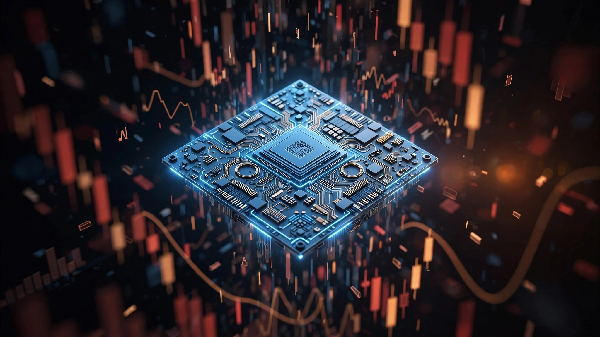

💻 Quantum
IBM Published Three Quantum Advantage Papers on the Same Day. Sixteen Days After Its Worst Stock Crash Ever.
Three coordinated papers, six partner organizations across four countries, seventy logical qubits. IBM released the largest single-day quantum advantage announcement in history on July 30, 2026. The science is genuinely important. But HSBC values IBM's quantum division at $35–51 billion in a global market worth $2 billion, and the stock had just lost $68.8 billion in a single afternoon.

Sixteen days separated IBM's worst stock crash in 115 years from its biggest quantum announcement ever. On July 14, 2026, IBM's stock fell 25.2% in a single session, cratering from $290.23 to $217.07 and erasing roughly $68.8 billion in market capitalization, a collapse steeper than Black Monday in 1987, triggered by CEO Arvind Krishna's admission that the company had "faltered" as customers shifted spending from IBM software toward AI hardware and memory chips.
On July 30, IBM published three separate papers claiming quantum advantage with three different partner organizations, backed by research teams spanning the United States, Israel, Japan, Finland, and Australia. Jay Gambetta, IBM's Director of Research, declared to the University of Chicago press office: "We are now firmly in the quantum advantage era."
He told Barron's something different the same day. "I want to be very careful, because we're not claiming quantum advantage," Gambetta said. "The more nuanced word is 'trusted computation.'"
Both statements are technically defensible, which is precisely why they matter, because the gap between "trusted computation" in a financial interview and "firmly in the quantum advantage era" in a university press release reveals a company navigating the distance between scientific caution and investor narrative with the precision of a quantum gate operation. Underlying science across all three papers is significant, perhaps genuinely historic. But the choreography surrounding them reveals a company that understands exactly how much its quantum narrative is worth in market capitalization per qubit.
What the Three Papers Actually Demonstrated
Each paper tackled a different problem, but all three converged on the same question: can you trust a quantum computer's answer when no classical machine can check its work?
Paper 1: IBM + Qedma (Tel Aviv) combined Qedma's error mitigation software, QESEM, with IBM's Heron processor to simulate the oscillatory dynamics of a two-dimensional Floquet Ising model on up to 74 qubits. Floquet Ising models describe how magnetic properties in materials evolve when driven by rhythmic external pulses, behavior relevant to ultrafast optoelectronics and light-induced superconductors. Researchers benchmarked their results against RIKEN's Fugaku supercomputer and BlueQubit's classical simulation technology. As the system grew in complexity over time, with more qubits and longer evolution windows, none of the classical approaches could produce consistent, reliable answers. Quantum results did.
Paper 2: IBM + University of Chicago encoded 70 logical qubits, executed 2,415 logical two-qubit operations and 468 logical T gates. This ranks among the largest error correction demonstrations ever performed. The quantum computer completed its computation in approximately 15 minutes; leading classical simulation approaches faced prohibitive runtimes. The team replaced random circuit sampling, the standard quantum benchmark since Google's 2019 supremacy claim, with a structured alternative that retains the same computational hardness but allows real-time error detection during the calculation itself.
Paper 3: IBM + Algorithmiq (Milan/Helsinki) simulated a heterogeneous quantum material and released the results to the public Quantum Advantage Tracker eight months before the formal paper. No classical method has matched the quantum results across the full problem regime in that time. Algorithmiq also released its best classical simulation method as an open benchmark, inviting the research community to try to beat it.
Verification across all three papers is genuinely new, because previous quantum advantage claims from Google in 2019 and D-Wave in 2025 faced legitimate criticism that their quantum answers might simply be wrong with no independent method to check them, and IBM's approach of running the same problem on Quantinuum's trapped-ion systems, a competitor's technology based on fundamentally different physics, addresses that gap directly. When two architectures built on different quantum phenomena produce the same answer independently, the probability of a correlated systematic error drops dramatically.
The $224 Million Per Qubit Problem
HSBC's quantum computing analyst values IBM's quantum division at $35 to $51 billion. IBM's Heron processor, the hardware behind all three papers, contains 156 physical qubits. Divide through:
| Metric | Low Estimate | High Estimate |
|---|---|---|
| HSBC quantum valuation | $35 billion | $51 billion |
| Heron physical qubits | 156 | |
| Implied value per physical qubit | $224 million | $327 million |
| Logical qubits demonstrated (Paper 2) | 70 | |
| Implied value per logical qubit | $500 million | $729 million |
| Global quantum computing market (2026) | ~$2 billion | |
| HSBC valuation as multiple of total market | 17.5× | 25.5× |
That last row is the one that should stop you. HSBC is valuing IBM's quantum division at 17 to 25 times the entire global quantum computing market. For context, even Nvidia at its most frothy traded at roughly 30 times its addressable market for a product that was already generating tens of billions in quarterly revenue. IBM's quantum business, according to the Motley Fool's analysis of its financials, "barely registers" in IBM's results.
CEO Krishna has projected Anderon, IBM's new quantum chip foundry funded by a $1 billion CHIPS Act award plus $1 billion from IBM, could generate "billions of dollars a year with high margins by the mid-2030s." That is a decade away, and it requires the total addressable quantum market to grow at least tenfold from its current $2 billion base, a trajectory that is possible but far from guaranteed and certainly not priced like a mere possibility by the analysts who assign it a premium valuation.
The Timing Question
Research papers do not materialize overnight. These three studies involved years of work across six organizations. Submission timelines to arXiv, where the preprints appeared, are not public, and it is entirely possible the July 30 release date was set months before IBM's stock imploded on July 14.
But papers and press releases are different animals. A company with a 115-year history and a dedicated media relations team does not accidentally coordinate three simultaneous press announcements with six international partners across four time zones. Brittany Forgione and Erin Angelini at IBM Media Relations orchestrated a single-day media event, with WSJ, Barron's, and UChicago News all carrying the story within hours.
Consider the corporate incentive structure. IBM's Q2 preliminary results showed revenue of $17.2 billion against a $17.86 billion consensus, a 3.7% miss that triggered a 25.2% stock collapse. Software growth decelerated from 11% in Q1 to 5%. Infrastructure revenue fell 7%. IBM did not update or reaffirm its full-year guidance ahead of the July 22 earnings report. Wall Street was spooked, and the company knew it. The quantum papers landed in that window.
In that context, three quantum advantage papers on one day, released between the Q2 warning and the formal earnings report, are not just science. They are narrative management. Shrewd narrative management. Every public company does it. What makes IBM's version notable is the scale of the gap between the narrative and the revenue.
The Strongest Case for IBM
Dismiss the timing and focus on the physics, because the physics holds up under scrutiny. Cross-hardware validation with Quantinuum is legitimately unprecedented. When IBM's superconducting qubits and Quantinuum's trapped-ion qubits produce consistent results on the same problem, that is not a press release. It is a genuine advance in experimental methodology that the field needed.
Releasing quantum circuits and results to the public Quantum Advantage Tracker before the formal paper appeared, as Algorithmiq did, is radical transparency. Most companies avoid it because it invites debunking. Eight months of public scrutiny with no classical method matching the results is meaningful evidence.
IBM has also been more honest about quantum's limitations than its competitors. Gambetta's comment to Barron's, distinguishing "trusted computation" from "quantum advantage," is precisely the kind of careful language that a scientist should use when the threshold between the two remains genuinely contested. That the UChicago press release quoted the same person using bolder language reflects how universities and corporate PR departments handle the same underlying science differently, not necessarily that Gambetta is being duplicitous.
And IBM's $10 billion, five-year quantum investment commitment, combined with $2 billion in CHIPS Act funding, is the largest sustained quantum research program on Earth. If quantum computing delivers on even a fraction of its theoretical promise in materials science, drug discovery, or cryptography, IBM's early-mover position could prove extraordinarily valuable. Krishna has compared it to what being first in GPUs did for Nvidia, a comparison that requires the same suspension of immediate revenue expectations that Nvidia demanded from investors in 2016.
Limitations
This analysis relies on several uncertain inputs. IBM does not disclose quantum-specific revenue, so "barely registers" is a qualitative assessment from external analysts, not a precise figure. HSBC's $35 to $51 billion valuation is one firm's model, not a market consensus; other analysts may value the division differently. IBM's R&D allocation to quantum specifically is estimated at 15 to 20 percent of total R&D spending, but the company does not break this out publicly. Paper submission timelines to arXiv are not disclosed, so we cannot determine with certainty whether the July 30 release date was chosen before or after the July 14 stock crash. Cross-hardware validation on Quantinuum demonstrates consistency between two quantum architectures, not absolute correctness; both could theoretically be wrong in the same way, though the different underlying physics makes this unlikely.
What You Can Do
If you invest in IBM: Separate the quantum narrative from the core business fundamentals when evaluating the stock, because IBM's Q2 miss was driven by software and mainframe weakness in an era when customers are diverting budgets toward AI infrastructure and supply-constrained memory chips, not by any underperformance in the quantum division, which generates essentially no revenue to underperform against. When analysts cite a $35 to $51 billion quantum valuation, ask what revenue supports it today. The answer is: essentially none. Treat quantum as a free option embedded in the stock price, not as a revenue contributor, until IBM reports quantum-specific financials.
If you work in quantum computing: Read the actual papers. The Floquet Ising model results and the 70-logical-qubit error correction demonstration are technically impressive regardless of corporate timing. The Quantum Advantage Tracker at quantum-advantage-tracker.github.io contains the raw circuits and data from the Algorithmiq paper. Try to beat it classically. If you can, that is a genuine contribution to the field.
If you follow the sector: Watch for IBM's Starling, a fault-tolerant quantum supercomputer targeted for 2029. That machine is the dividing line between quantum as a scientific curiosity and quantum as a commercial tool. If Starling ships on schedule and demonstrates practical applications, the $35 to $51 billion valuation will look cheap. If it slips or underdelivers, the same valuation will look like the most expensive physics experiment in corporate history.
The Bottom Line
IBM's three-paper day on July 30 contained real science that advances the field of quantum computing in ways that matter. Cross-hardware validation, structured alternatives to random circuit sampling, and months of public benchmarking without classical methods catching up represent genuine progress toward trustworthy quantum computation. None of that is manufactured or fraudulent. But science and corporate strategy are not the same thing, even when they share a press release. IBM, valued at $224 million per physical qubit in a $2 billion global market, 16 days after the worst stock crash in its history, released the single largest coordinated quantum advantage announcement any company has ever made. Physics is real. Valuation math sitting on top of it is a separate experiment entirely, one that will take until Starling ships in 2029 to verify. Unlike the quantum computation itself, there is no Quantinuum to cross-check that answer.